Part A.1 · Training and sampling with a pretrained flow model
Part A uses PixNerd-XXL-P16-T2I, a text-to-image flow model that works directly on 512×512 pixels. A prompt is turned into an embedding with Qwen3, and the model predicts a velocity vθ(xt, t, c). Time t = 0 is pure noise and t = 1 is a clean image. I ran everything on a free Colab T4 in float32. For Sections 1.1 to 1.5 I used my photo of Doe Library from Project 0.
1.1 Noisy training inputs
A training input is a straight-line mix of noise and image: xt = (1 − t) ε + t x1, with ε ~ N(0, I). This scales the image down as well as adding noise. I drew one ε and reused it for all three times.
def interpolate(image, noise, t):
return (1 - t) * noise + t * image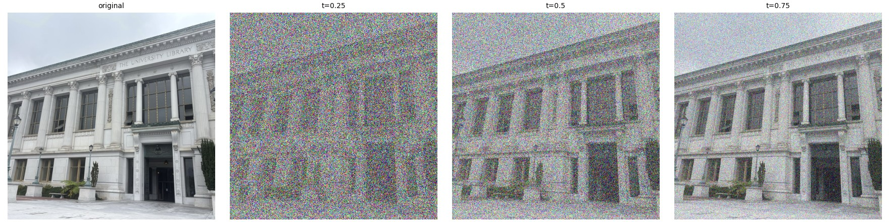
At t = 0.25 you can only just make out the building. At t = 0.75 the columns and windows are clear.
1.2 Gaussian blur as a baseline
Since the image part of xt is scaled by t, I first divide by t, which gives x1 + ((1 − t)/t) ε. Then I blur. The notebook tries σ = 1, 2, 4, 8 and 16 and keeps the one closest to the clean photo. The chosen σ is in each title.
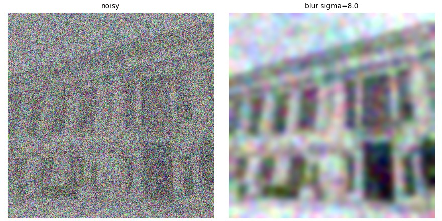
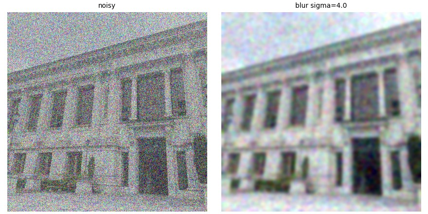
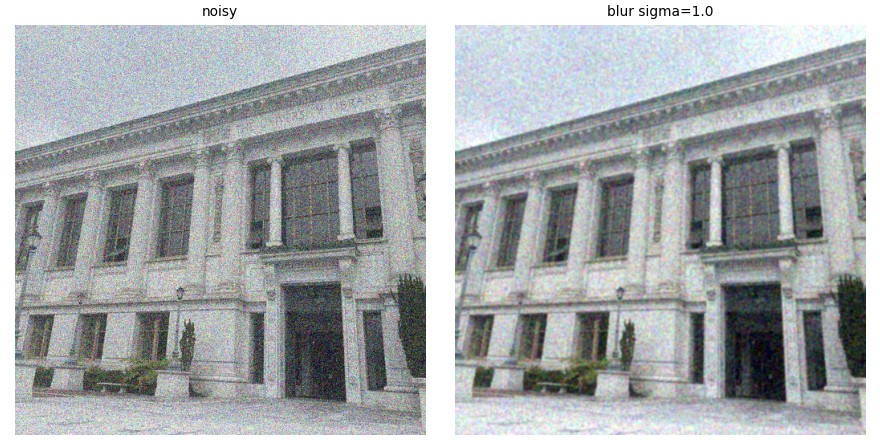
Blurring trades noise for detail, and the best σ shrinks as t grows: 8, then 4, then 1. At t = 0.25 even σ = 8 leaves colored blobs and soft columns. At t = 0.75 the best choice barely blurs at all, so most of the noise is still there. A blur cannot tell noise from fine detail, so it cannot remove one without the other.
1.3 One-step denoising
With one velocity prediction I can jump straight to the end of the path: x̂1 = xt + (1 − t) vθ(xt, t, c), with the prompt "a high quality photo".
def one_step_denoise(x, t, condition, predict_velocity):
return x + (1 - t) * predict_velocity(x, t, condition)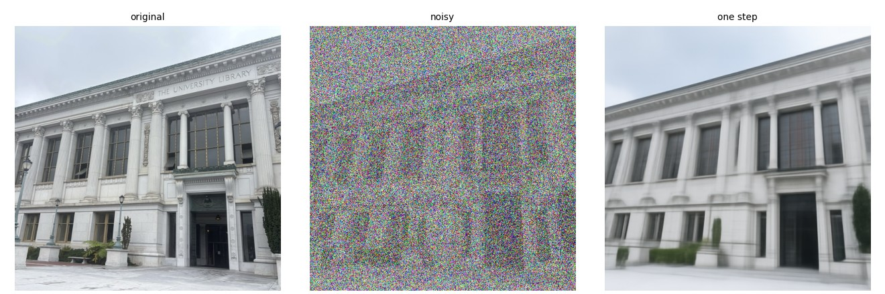
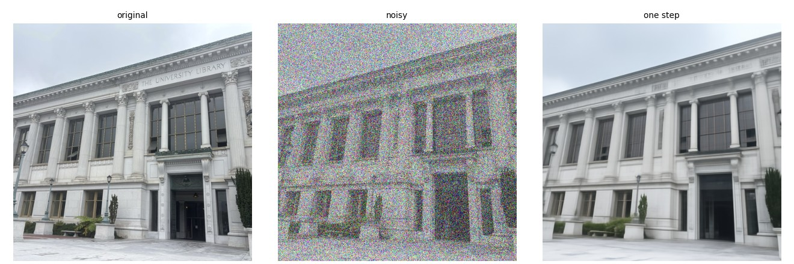
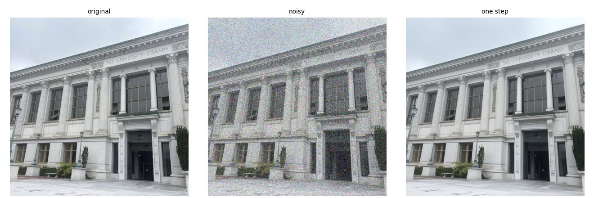
This is far better than the blur. Even at t = 0.25 the result is a clean building in the right place. But it is smooth and generic: the carved lettering, lamps and plants are smeared or missing. The estimate is close to an average of the images that could have made this xt, so detail the noise has hidden comes out blurred.
1.4 What the model adds
The one-step update is (1 − t) v̂. Since I know the clean photo and the noise, I also know the true update, (1 − t)(x1 − ε) = x1 − xt. Both updates are shown on the same symmetric color scale, with zero at middle gray. The error map is the RMS difference over RGB at each pixel.
@torch.inference_mode()
def velocity_diagnostics(x_t, t, clean_image, epsilon, condition, predict_velocity):
predicted_update = (1 - t) * predict_velocity(x_t, t, condition)
ground_truth_update = (1 - t) * (clean_image - epsilon)
error_map = ((predicted_update - ground_truth_update) ** 2).mean(dim=1).sqrt()
return predicted_update, ground_truth_update, error_map
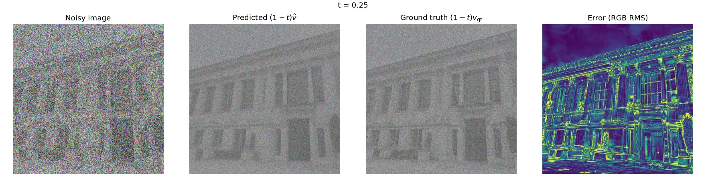
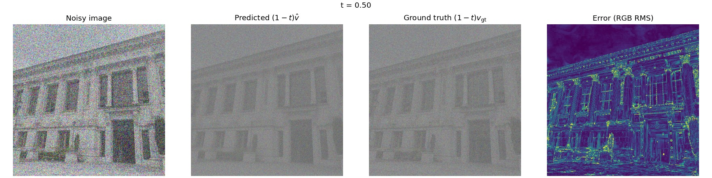
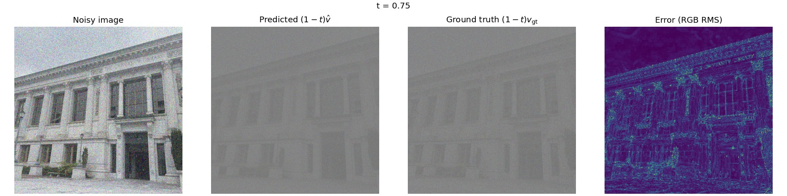
The predicted and true updates look almost the same. Both hold the noise to remove plus the image structure to add, so they are mostly gray with the building faintly showing. The error map shows where they differ. I set its color limit to 0.3 at all three times, about the 99th percentile at t = 0.50. The flat sky and walls are dark, so the model gets those right. The error sits on edges and fine detail: the carved lettering, the column tops, window frames, plants and the pavement. That is the detail the noise has hidden, so the model can only guess it. The error shrinks as t grows (the 90th percentile goes 0.21, 0.13, 0.08), because less of the image is hidden. Where the model is unsure, it predicts an average, which is why the one-step results look smooth.
1.5 Iterative denoising with Euler steps
The velocity changes along the path, so a single jump is inaccurate. Euler sampling takes a small step, xt+h = xt + h vθ(xt, t, c), predicts again, and repeats. I precompute the step times so the last step is shortened to land exactly on t = 1. The notebook checks this with a constant velocity field: 50 steps from 0, 25 from 0.5, and 4 from 0.93, the last of which is 0.01.
@torch.inference_mode()
def euler_sample(x_start, t_start, step_size, velocity):
steps = math.ceil(round((1 - t_start) / step_size, 6))
times = [t_start + k * step_size for k in range(steps)] + [1.0]
x, states = x_start, [(t_start, x_start)]
for t, t_next in zip(times, times[1:]):
x = x + (t_next - t) * velocity(x, t)
states.append((t_next, x))
return x, states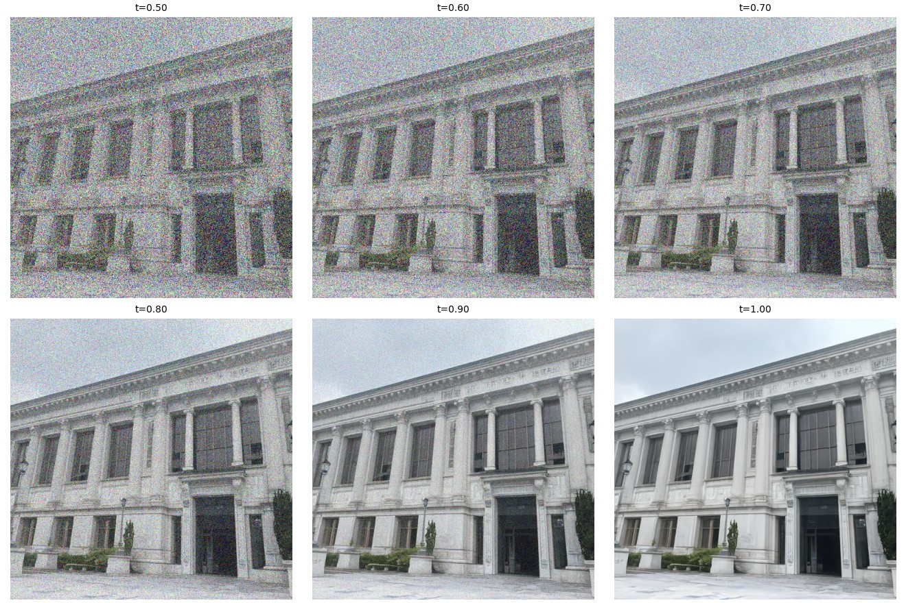
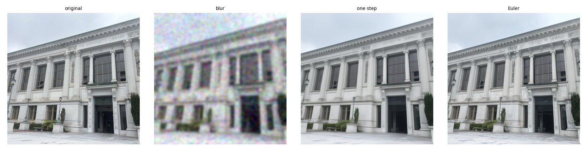
| Method | Mean squared error to the original |
|---|---|
| Gaussian blur | 0.0271 |
| One step | 0.0072 |
| Euler, 25 steps | 0.0088 |
The table looks backwards at first. One step has the lowest error, but Euler looks best. A one-step estimate is close to the average of every image that could have made this xt, and that average is exactly what minimizes squared error. So it wins on the number while looking smooth. Euler commits to one specific, sharp image. Wherever its invented detail does not line up with the photo, like the lettering or the pavement, squared error counts it twice: once for the missing real detail and once for the invented one. By eye, Euler is the closest. The trajectory shows the noise fading out while the carvings, lamps and plants come back, and the blur is the worst on both counts.
1.6 Generating images from pure noise
Starting Euler sampling at t = 0 from pure noise turns the denoiser into a generator. These are five seeds with "a high quality photo" and no guidance.
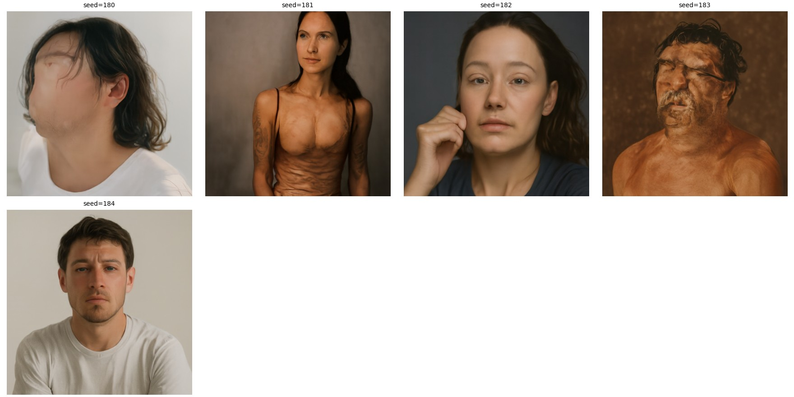
All five are portraits of people. The model seems to treat "a high quality photo" as "a portrait". The images are soft, and two have badly broken faces (seeds 180 and 183). Without guidance the prompt only pulls weakly, so the samples drift toward something that is only roughly a photo.
Part A.2 · Classifier-free guidance
CFG evaluates the model twice at the same xt and t, once with the prompt (vc) and once with the empty prompt (vu), and pushes past the conditional prediction: v = vc + w (vc − vu). With w = 0 this is the plain conditional prediction, which the notebook checks. I used w = 7.
def cfg_velocity(x, t, condition, w, predict_velocity, null_condition=''):
v_c = predict_velocity(x, t, condition)
v_u = predict_velocity(x, t, null_condition)
return v_c + w * (v_c - v_u)
Every sample is now a sharp, well-lit studio portrait with a correct face. The cost is variety. All five are centered, front-facing faces on plain backgrounds, where the unguided samples had different poses and framings. Each seed still keeps its rough layout and colors. Seed 182 has a hand by the face in both versions.
Part A.3.1 · Image-to-image editing
This is SDEdit. I noise a real image to a starting time t with the interpolation above, then run the CFG Euler sampler from t to 1. A small t means lots of noise, so the model has to invent most of the image. A large t keeps most of the original. All sweeps use the prompt "a high quality photo", w = 7, h = 0.02 and the same noise.
def edit(image, noise, t_start, condition, predict_velocity, w=7, step_size=0.02):
velocity = lambda x, t: cfg_velocity(x, t, condition, w, predict_velocity)
return euler_sample(interpolate(image, noise, t_start), t_start, step_size, velocity)[0]Campanile
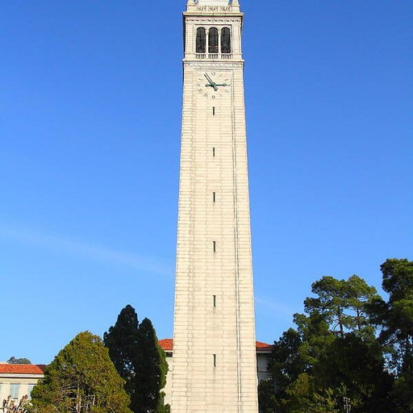
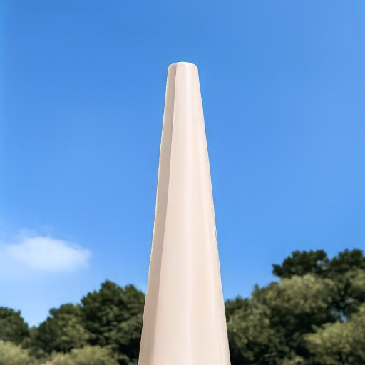
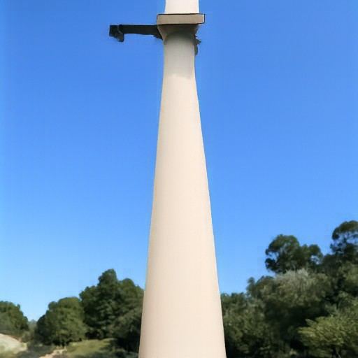
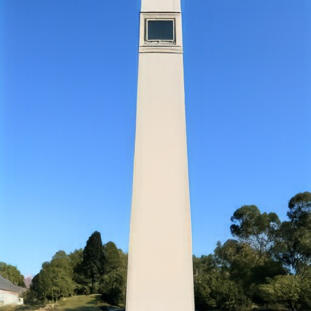
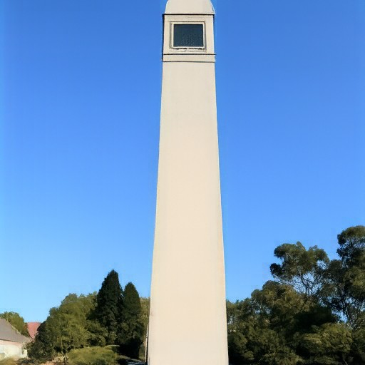
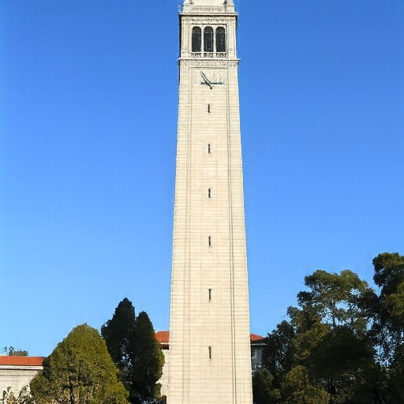
At t = 0.02 only a pale rounded column against blue survives. From 0.04 to 0.14 it is a plain tapered tower or obelisk with trees at the bottom. The belfry arches come back at t = 0.25, and the clock at 0.50.
My photo: Doe Library
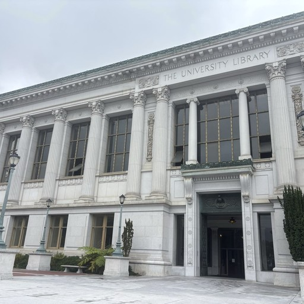
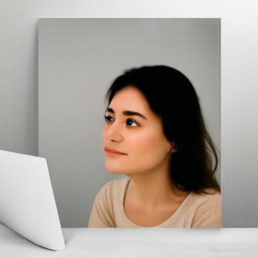
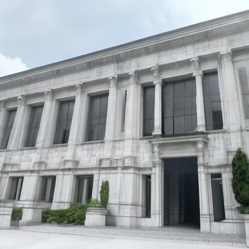
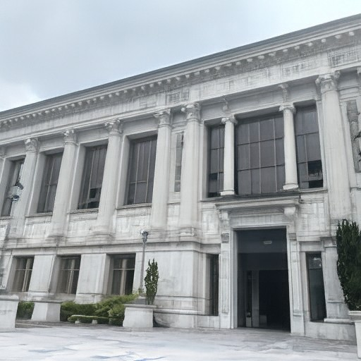
The low starting times keep only the gray and white palette. t = 0.02 is a portrait of a woman, and 0.04 is a still life of cups and canisters. At 0.06 it becomes a small classical temple, which is the first time the columns are used. By 0.14 the real colonnade is back in the right perspective.
My photo: a fire hydrant
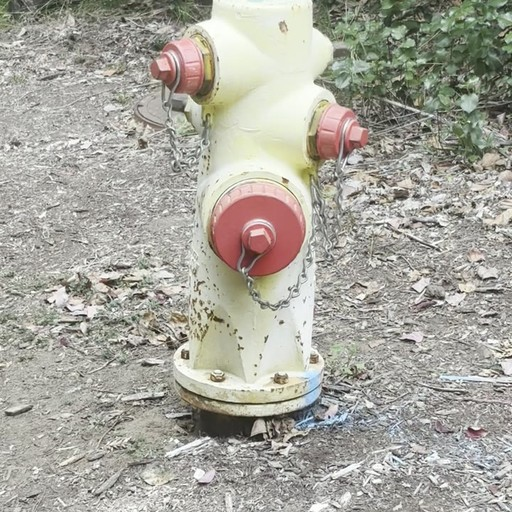
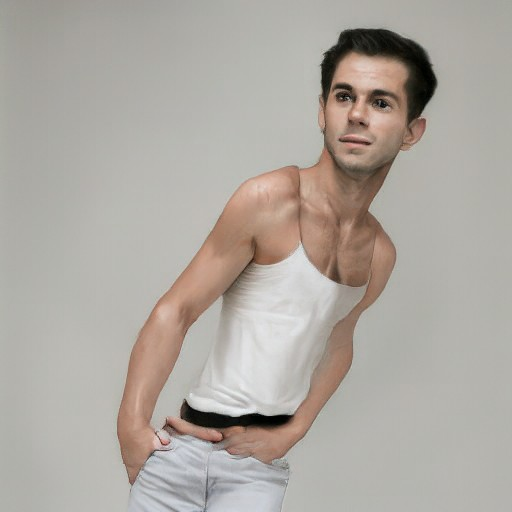
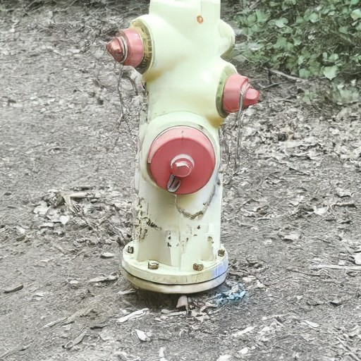
The tall white shape gets read as a person: a man in a white tank top at 0.04, then a leg in white trousers and a sneaker at 0.06. At 0.10 and 0.14 it is a white bottle with a red label, keeping the red cap as a logo. At 0.25 the hydrant is back, but its side caps look like fleshy lumps.
Editing a web image and drawings
The web image is Van Gogh's The Starry Night, from Wikimedia Commons.
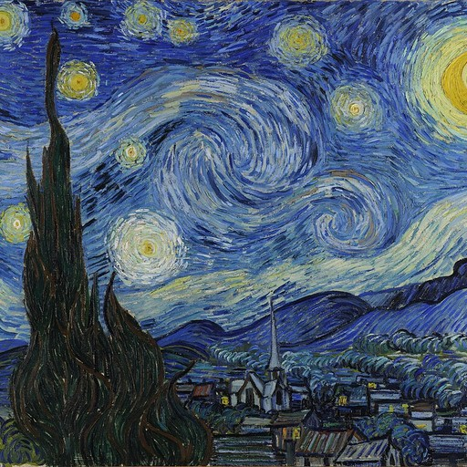
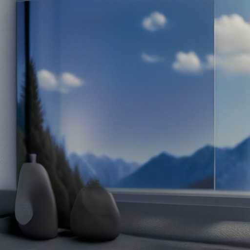
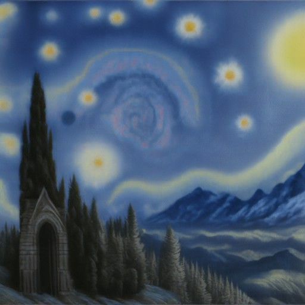
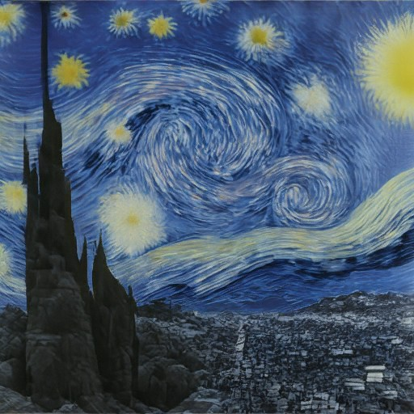
This is the most interesting sweep. From 0.02 to 0.06 the painting becomes a photo of an old CRT monitor, and only the blue and violet colors survive. At 0.10 it is a photo through a window, with mountains, clouds and dark cypress-like trees. At 0.14 it is halfway between photo and painting, with a stone arch, real-looking trees and glowing stars. At 0.25 the painting is back, but the cypress has turned into a rocky crag over a photographic town.
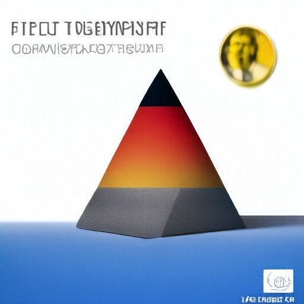
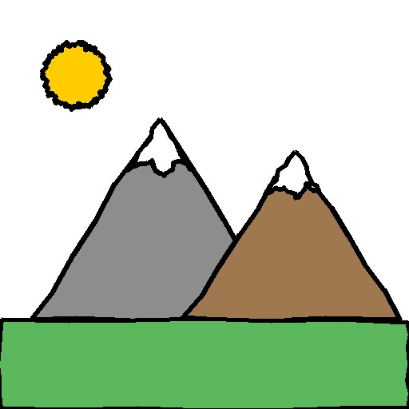
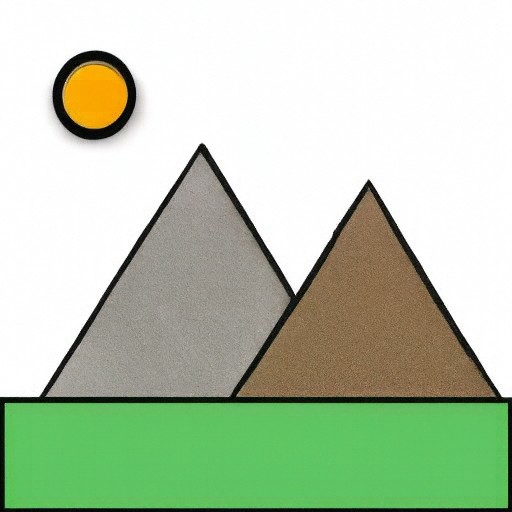
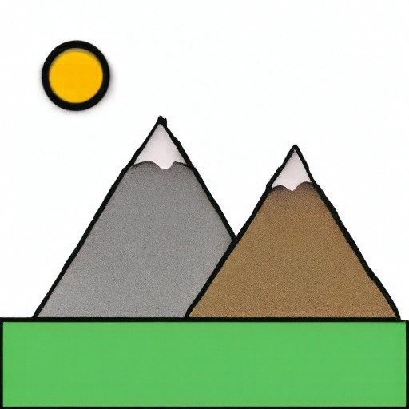
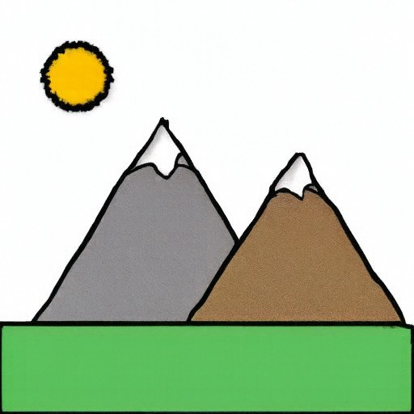
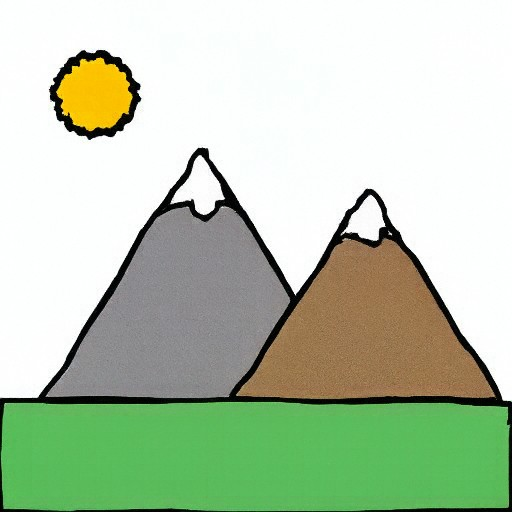
The drawings never become photos. At the lowest starting time each one turns into an unrelated face. Then the flat colors and white background get read as graphic design: at 0.04 and 0.06 the sailboat becomes a poster with a striped pyramid, fake text and a logo, and the mountains get fake lettering and a button for a sun. From 0.10 on, the model returns a cleaned-up version of the drawing, with smooth outlines and a perfectly round sun. It even adds a watermark to the sailboat. The mountains at 0.10 are the closest to "real", with a felt or paper texture in the fills. The generic prompt is not strong enough to push a cartoon all the way to a photo.
Part A.3.2 · Text-guided editing
Same procedure, but with a prompt that describes the edit instead of "a high quality photo".
Campanile: "a photograph of a lighthouse at sunset"

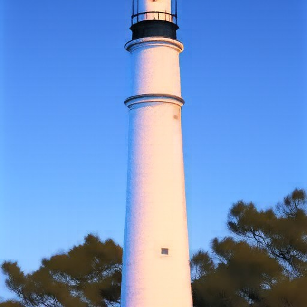
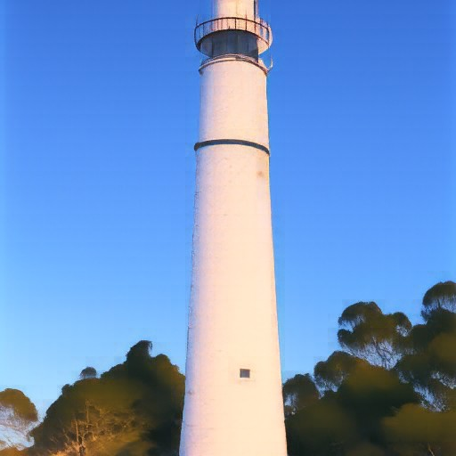
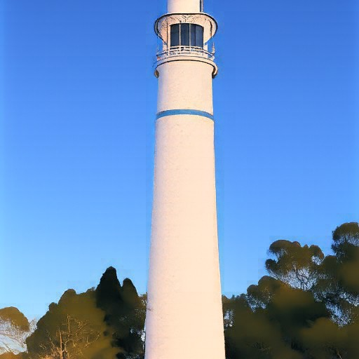
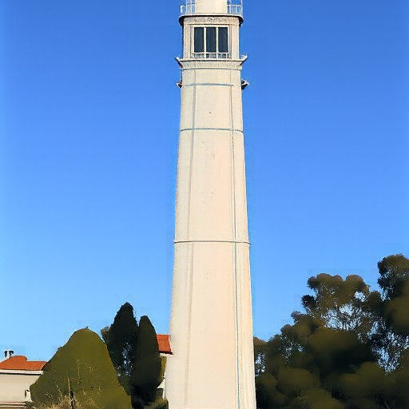
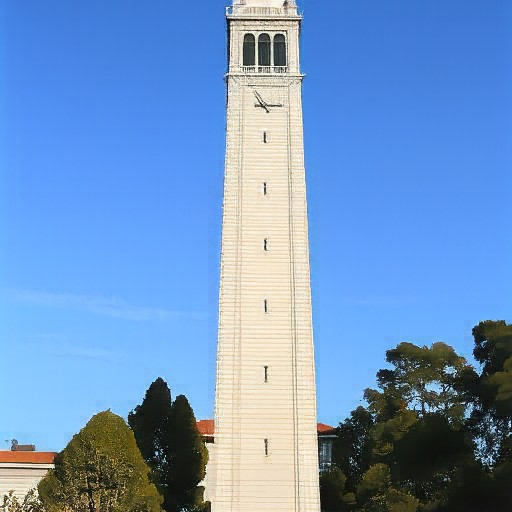
At 0.02 and 0.04 it is a whole new lighthouse, with a red lantern, pink sunset clouds and boulders. Between 0.06 and 0.14 the edit is the best mix: the Campanile's framing and trees stay, while the tower becomes a lighthouse with a gallery at the top, lit warm by the sun. At 0.25 it is the Campanile again with lighthouse windows.
Doe Library: "a photograph of a library covered in snow"

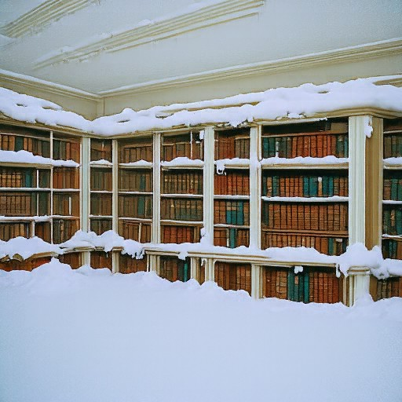
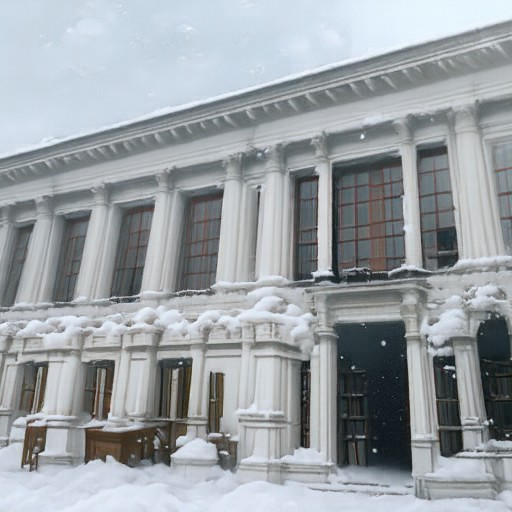
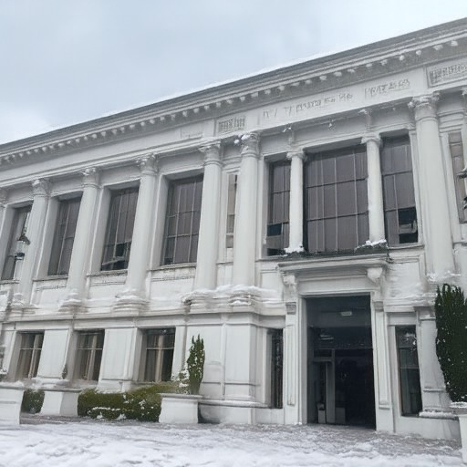
The model takes "library" literally. At low starting times it draws bookshelves full of books, buried in snow. At 0.10 and 0.14 Doe's colonnade is back under heavy snow, but with bookshelves where the windows should be. From 0.25 on it is the real building with snow on the ledges and the ground.
Fire hydrant: "a photograph of a small robot standing in the dirt"

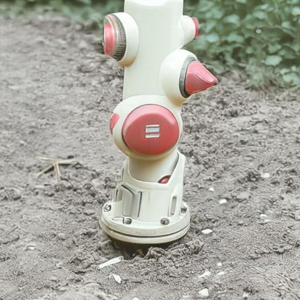
At 0.02 and 0.04 it is a cute toy robot unrelated to the hydrant. From 0.06 to 0.14 the robot is built out of the hydrant: the red cap becomes a head or chest, the cream body stays, and arms grow out of the side outlets. At 0.25 it is a hydrant again with a few robot parts.
Part A.3.3 · Visual anagrams
At every Euler step I compute two CFG velocities. One is for xt with prompt p1. The other is for xt rotated 180° with prompt p2, rotated back. The step uses their average, so the image has to be a good p1 image upright and a good p2 image upside down at the same time.
def visual_anagrams(noise, condition_a, condition_b, predict_velocity, w=7, step_size=0.02):
def velocity(x, t):
v_a = cfg_velocity(x, t, condition_a, w, predict_velocity)
v_b = rotate180(cfg_velocity(rotate180(x), t, condition_b, w, predict_velocity))
return (v_a + v_b) / 2
return euler_sample(noise, 0, step_size, velocity)[0]I tried three prompt pairs with two seeds each and kept the better seed of each pair.
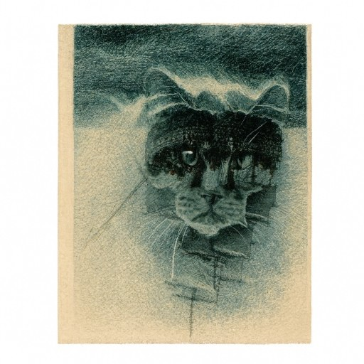
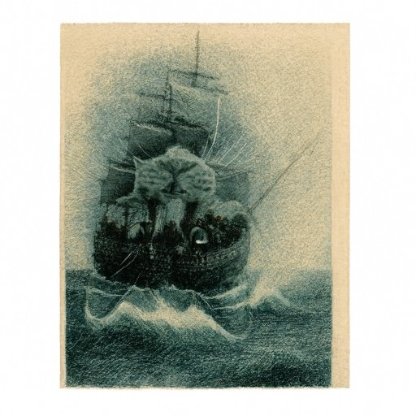
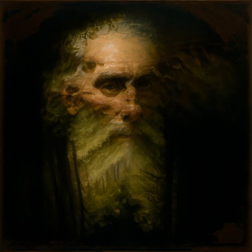
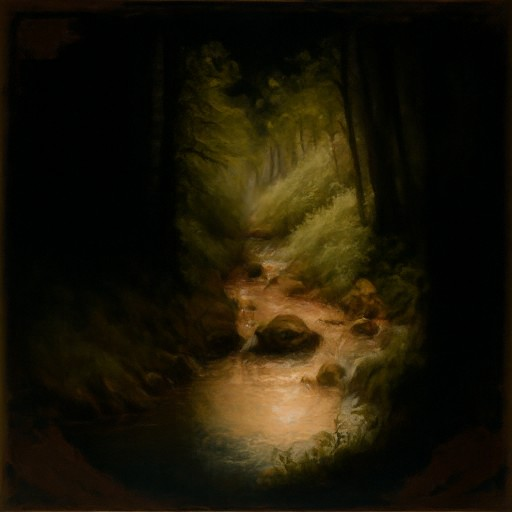
The cat and ship works best. Upright, a cat's face fills a framed print. Upside down, the cat's ears and face become the hull and rigging of a sailing ship, and the dark top of the print becomes the waves. In the second one the flowers double as the woman's cheeks and lips, and the vase becomes her dark hair. The vase reads more clearly than the face. In the third, the old man's beard is the forest's foliage and his bright forehead becomes the light on the river. Faces make good anagrams: a face needs only a few dark spots in the right places, and the loose painting and print styles hide the seams.
Part A.3.4 · Hybrid images
This is Project 2's hybrid images, done during sampling. At each step I compute CFG velocities for two prompts, keep the low frequencies of the first and the high frequencies of the second, and add them. The low-pass filter is a Gaussian blur (kernel 265, σ = 16), and the high-pass part is a velocity minus its blur. Up close you see the high-frequency prompt. From far away, or at a small size, you see the low-frequency one.
def make_hybrids(noise, condition_a, condition_b, predict_velocity, w=7, step_size=0.02):
def velocity(x, t):
v_a = cfg_velocity(x, t, condition_a, w, predict_velocity)
v_b = cfg_velocity(x, t, condition_b, w, predict_velocity)
return lowpass(v_a) + v_b - lowpass(v_b)
return euler_sample(noise, 0, step_size, velocity)[0]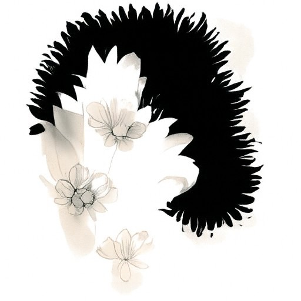
I tried five prompt pairs with two seeds each. The skull and city works best. Up close it is a skyline at night, but the dark clusters of buildings sit where a skull's eye sockets, nose and teeth go, so at 64 pixels it is clearly a skull. In the coastline, a rock arch and the cave around it make the brow, eye and nose of a face. The woman's face is carried mostly by a big black shape of hair, with the flowers as her features. Two pairs did not work. No dog appeared in the mountain village, and the owl in the fruit bowl only shows up, in one seed, as two dark fruits for eyes and leaves for ear tufts. A hybrid works when the far subject has a strong, simple silhouette and the near subject is made of many small shapes that can be arranged to fill it.
Part B.1 · A one-step denoising UNet
1.1 The UNet
The UNet has two downsampling blocks, a bottleneck that pools the 7×7 map to 1×1 and back, and two upsampling blocks. Each upsampling step concatenates the matching encoder output (the skip connections). The simple ops are a 3×3 convolution, a stride-2 convolution, a stride-2 transposed convolution, a 7×7 average pool and a 7×7 transposed convolution, each followed by batch norm and GELU (the pool has no batch norm).
class Conv(nn.Module):
def __init__(self, in_channels: int, out_channels: int):
super().__init__()
self.net = nn.Sequential(nn.Conv2d(in_channels, out_channels, 3, 1, 1),
nn.BatchNorm2d(out_channels), nn.GELU())
def forward(self, x: torch.Tensor) -> torch.Tensor:
return self.net(x)
class DownConv(nn.Module):
def __init__(self, in_channels: int, out_channels: int):
super().__init__()
self.net = nn.Sequential(nn.Conv2d(in_channels, out_channels, 3, 2, 1),
nn.BatchNorm2d(out_channels), nn.GELU())
def forward(self, x: torch.Tensor) -> torch.Tensor:
return self.net(x)
class UpConv(nn.Module):
def __init__(self, in_channels: int, out_channels: int):
super().__init__()
self.net = nn.Sequential(nn.ConvTranspose2d(in_channels, out_channels, 4, 2, 1),
nn.BatchNorm2d(out_channels), nn.GELU())
def forward(self, x: torch.Tensor) -> torch.Tensor:
return self.net(x)
class Flatten(nn.Module):
def __init__(self):
super().__init__()
self.net = nn.Sequential(nn.AvgPool2d(7), nn.GELU())
def forward(self, x: torch.Tensor) -> torch.Tensor:
return self.net(x)
class Unflatten(nn.Module):
def __init__(self, in_channels: int):
super().__init__()
self.net = nn.Sequential(nn.ConvTranspose2d(in_channels, in_channels, 7, 7, 0),
nn.BatchNorm2d(in_channels), nn.GELU())
def forward(self, x: torch.Tensor) -> torch.Tensor:
return self.net(x)
class ConvBlock(nn.Module):
def __init__(self, in_channels: int, out_channels: int):
super().__init__()
self.net = nn.Sequential(Conv(in_channels, out_channels), Conv(out_channels, out_channels))
def forward(self, x: torch.Tensor) -> torch.Tensor:
return self.net(x)
class DownBlock(nn.Module):
def __init__(self, in_channels: int, out_channels: int):
super().__init__()
self.net = nn.Sequential(DownConv(in_channels, out_channels), ConvBlock(out_channels, out_channels))
def forward(self, x: torch.Tensor) -> torch.Tensor:
return self.net(x)
class UpBlock(nn.Module):
def __init__(self, in_channels: int, out_channels: int):
super().__init__()
self.net = nn.Sequential(UpConv(in_channels, out_channels), ConvBlock(out_channels, out_channels))
def forward(self, x: torch.Tensor) -> torch.Tensor:
return self.net(x)I wrote the forward pass once, in run. It takes two functions that change the bottleneck output and the first upsampling output. The plain UNet passes functions that do nothing. The conditioned UNets in Part B.2 reuse it.
class UnconditionalUNet(nn.Module):
def __init__(
self,
in_channels: int,
num_hiddens: int,
):
super().__init__()
d = num_hiddens
self.first = ConvBlock(in_channels, d)
self.down1 = DownBlock(d, d)
self.down2 = DownBlock(d, 2 * d)
self.flatten = Flatten()
self.unflatten = Unflatten(2 * d)
self.up1 = UpBlock(4 * d, d)
self.up2 = UpBlock(2 * d, d)
self.last = ConvBlock(2 * d, d)
self.out = nn.Conv2d(d, in_channels, 3, 1, 1)
def run(self, x, after_unflatten, after_up1):
assert x.shape[-2:] == (28, 28), "Expect input shape to be (28, 28)."
x28 = self.first(x)
x14 = self.down1(x28)
x7 = self.down2(x14)
u = after_unflatten(self.unflatten(self.flatten(x7)))
u = after_up1(self.up1(torch.cat([x7, u], dim=1)))
u = self.up2(torch.cat([x14, u], dim=1))
return self.out(self.last(torch.cat([x28, u], dim=1)))
def forward(self, x: torch.Tensor) -> torch.Tensor:
return self.run(x, lambda u: u, lambda u: u)1.2 Noising MNIST
To make training pairs, I add Gaussian noise to a clean digit x: z = x + σε, with ε ~ N(0, I). Here are four test digits at each σ. The noise is drawn once and scaled, so each column only changes σ.
1.2.1 Training a denoiser at σ = 0.5
I trained the UNet (D = 128) to map z back to x with an L2 loss, for 5 epochs with Adam (learning rate 1e-4) and batches of 256. The noise is drawn fresh for every batch, so the model never sees the same noisy image twice.

After one epoch the digits are already readable, but some strokes are broken (the 1) or smudged (the 5). After five epochs the strokes are clean and continuous. The outputs are a little softer than the originals, which is what an L2 loss does when it is unsure.
1.2.2 Out-of-distribution noise levels
The same model, trained only at σ = 0.5, on three test digits with σ from 0 to 1. Each pair of rows is one digit.
For σ ≤ 0.5 the output is clean. At σ = 0.6 it still works, with small artifacts. At σ = 0.8 and 1.0 the model invents strokes that are not there. The 1 turns into a scribble, since a thin digit is easy to lose in strong noise.
1.2.3 Denoising pure noise
Next I trained a fresh UNet with the same settings, but its input was pure noise z = ε, with no digit in it at all.
What the outputs look like. Every input gives the same blurry blob. It looks like a 0, 3, 8 and 9 drawn on top of each other. The loss drops to about 0.067 in the first 100 steps and then stays flat.
Why. The input says nothing about which digit to produce, so the best the model can do under an L2 loss is predict the point with the smallest total squared distance to all training digits. That point is their mean, the centroid of the training set. I checked this. Over 1,000 random inputs, the average output differs from the pixel-wise mean of the 60,000 training digits by a mean squared error of 7.7e-05, and the outputs barely vary (pixel standard deviation 0.0065). So one-step denoising cannot generate new digits. It can only average.
Part B.2 · Flow matching
Instead of jumping from noise to a digit in one step, flow matching learns a velocity field and follows it in small steps. For a clean digit x1 and noise x0, the path is xt = (1 − t) x0 + t x1, so t = 0 is noise and t = 1 is the digit. Its velocity is x1 − x0, and the UNet uθ(xt, t) learns to predict it.
2.1 Time conditioning
Each FCBlock is Linear, GELU, Linear. Two of them turn t into a 2D-channel vector and a D-channel vector. These multiply the bottleneck output and the first upsampling output.
class FCBlock(nn.Module):
def __init__(self, in_channels: int, out_channels: int):
super().__init__()
self.net = nn.Sequential(nn.Linear(in_channels, out_channels), nn.GELU(),
nn.Linear(out_channels, out_channels))
def forward(self, x: torch.Tensor) -> torch.Tensor:
return self.net(x)
class TimeConditionalUNet(UnconditionalUNet):
def __init__(
self,
in_channels: int,
num_classes: int,
num_hiddens: int,
):
super().__init__(in_channels, num_hiddens)
self.fc1_t = FCBlock(1, 2 * num_hiddens)
self.fc2_t = FCBlock(1, num_hiddens)
def forward(
self,
x: torch.Tensor,
t: torch.Tensor,
) -> torch.Tensor:
t = t.view(-1, 1).float()
t1 = self.fc1_t(t)[..., None, None]
t2 = self.fc2_t(t)[..., None, None]
return self.run(x, lambda u: u * t1, lambda u: u * t2)2.2 Training
Each step draws a batch of digits, a fresh noise image for each, and a time t ~ U[0, 1] for each. The loss is the squared error between the predicted and true velocity.
def time_fm_forward(
unet: TimeConditionalUNet,
x_1: torch.Tensor,
num_ts: int,
) -> torch.Tensor:
unet.train()
x_0 = torch.randn_like(x_1)
t = torch.rand(x_1.shape[0], device=x_1.device)
x_t = (1 - t.view(-1, 1, 1, 1)) * x_0 + t.view(-1, 1, 1, 1) * x_1
return F.mse_loss(unet(x_t, t), x_1 - x_0)
def train_flow(fm, loss_fn, name, num_epochs=10, lr=1e-2, use_scheduler=True):
loader = make_loader(64)
optimizer = torch.optim.Adam(fm.parameters(), lr=lr)
scheduler = torch.optim.lr_scheduler.ExponentialLR(optimizer, gamma=0.1 ** (1.0 / num_epochs))
losses, checkpoints = [], {}
for epoch in range(1, num_epochs + 1):
for x, c in tqdm(loader, desc=f'{name} epoch {epoch}'):
loss = loss_fn(x.to(device), c.to(device))
optimizer.zero_grad()
loss.backward()
optimizer.step()
losses.append(loss.item())
if use_scheduler:
scheduler.step()
if epoch in (1, 5, num_epochs):
checkpoints[epoch] = {k: v.detach().clone() for k, v in fm.state_dict().items()}
torch.save(checkpoints[epoch], CHECKPOINTS / f'{name}_epoch{epoch}.pt')
loss_plot(losses, name)
return losses, checkpointsI trained with D = 64, batches of 64, and Adam starting at 1e-2, with an exponential decay that multiplies the learning rate by 0.11/10 after each of the 10 epochs.
2.3 Sampling
Sampling starts at pure noise and takes 50 Euler steps: x ← x + (1/50) uθ(x, t), for t = 0, 1/50, …, 49/50. All three grids use the same starting noise.
@torch.inference_mode()
def time_fm_sample(
unet: TimeConditionalUNet,
img_wh: tuple[int, int],
num_ts: int,
seed: int = 0,
num_samples: int = 40,
) -> torch.Tensor:
unet.eval()
device = next(unet.parameters()).device
x = torch.randn((num_samples, 1, *img_wh), generator=torch.Generator().manual_seed(seed)).to(device)
for i in range(num_ts):
t = torch.full((num_samples,), i / num_ts, device=device)
x = x + unet(x, t) / num_ts
return xAfter one epoch the samples are digit-like strokes but not digits. After five, about half are readable. After ten, most are clear digits, and a few still look like two digits blended together. Since the samples share their starting noise, you can see the same sample sharpen from epoch 5 to epoch 10.
2.4 Class conditioning
Two more FCBlocks take the class as a one-hot vector. The bottleneck becomes c1 · unflatten + t1 and the first upsampling output becomes c2 · up1 + t2. During training I zero the class vector 10% of the time, so the same model also learns the unconditional velocity.
class ClassConditionalUNet(UnconditionalUNet):
def __init__(
self,
in_channels: int,
num_classes: int,
num_hiddens: int,
):
super().__init__(in_channels, num_hiddens)
self.num_classes = num_classes
self.fc1_t = FCBlock(1, 2 * num_hiddens)
self.fc1_c = FCBlock(num_classes, 2 * num_hiddens)
self.fc2_t = FCBlock(1, num_hiddens)
self.fc2_c = FCBlock(num_classes, num_hiddens)
def forward(
self,
x: torch.Tensor,
c: torch.Tensor,
t: torch.Tensor,
mask: Optional[torch.Tensor] = None,
) -> torch.Tensor:
c = F.one_hot(c, self.num_classes).float()
if mask is not None:
c = c * mask.view(-1, 1).float()
t = t.view(-1, 1).float()
t1 = self.fc1_t(t)[..., None, None]
t2 = self.fc2_t(t)[..., None, None]
c1 = self.fc1_c(c)[..., None, None]
c2 = self.fc2_c(c)[..., None, None]
return self.run(x, lambda u: c1 * u + t1, lambda u: c2 * u + t2)
def class_fm_forward(
unet: ClassConditionalUNet,
x_1: torch.Tensor,
c: torch.Tensor,
p_uncond: float,
num_ts: int,
) -> torch.Tensor:
unet.train()
mask = (torch.rand(c.shape[0], device=c.device) >= p_uncond).float()
x_0 = torch.randn_like(x_1)
t = torch.rand(x_1.shape[0], device=x_1.device)
x_t = (1 - t.view(-1, 1, 1, 1)) * x_0 + t.view(-1, 1, 1, 1) * x_1
return F.mse_loss(unet(x_t, c, t, mask), x_1 - x_0)2.5 Training
The settings are the same as the time-only model.
2.6 Sampling with classifier-free guidance
Each of the 300 Euler steps evaluates the model twice, with and without the class, and mixes them: u = uuncond + γ (ucond − uuncond), with γ = 5. Each column is one digit, with four samples each.
@torch.inference_mode()
def class_fm_sample(
unet: ClassConditionalUNet,
c: torch.Tensor,
img_wh: tuple[int, int],
num_ts: int,
guidance_scale: float = 5.0,
seed: int = 0,
) -> torch.Tensor:
unet.eval()
x = torch.randn((len(c), 1, *img_wh), generator=torch.Generator().manual_seed(seed)).to(c.device)
keep = torch.ones(len(c), device=c.device)
drop = torch.zeros(len(c), device=c.device)
for i in range(num_ts):
t = torch.full((len(c),), i / num_ts, device=c.device)
u_cond = unet(x, c, t, keep)
u_uncond = unet(x, c, t, drop)
x = x + (u_uncond + guidance_scale * (u_cond - u_uncond)) / num_ts
return xThe class label helps a lot. Every digit is right and readable after one epoch, if a bit blotchy. By epoch 5 the strokes are clean, and epoch 10 adds variety in slant and thickness.
Removing the learning rate scheduler
The scheduler takes the learning rate from 1e-2 down to about 1.3e-3. I removed it and used a constant learning rate of 1e-3 instead, close to where the scheduler ends. The large early steps are what the decay protects against. Starting low means the model never needs to be calmed down later. I kept everything else the same, including the seed.
| Run | Mean training loss, last epoch | Loss on 2,000 test digits |
|---|---|---|
| Exponential decay from 1e-2 | 0.0837 | 0.0804 |
| Constant 1e-3 | 0.0864 | 0.0827 |
The test loss uses the same digits, noise and times for both models. The constant learning rate ends about 3% higher, and the samples at epoch 10 are just as clean. So a single well-chosen learning rate does nearly as well as the schedule.